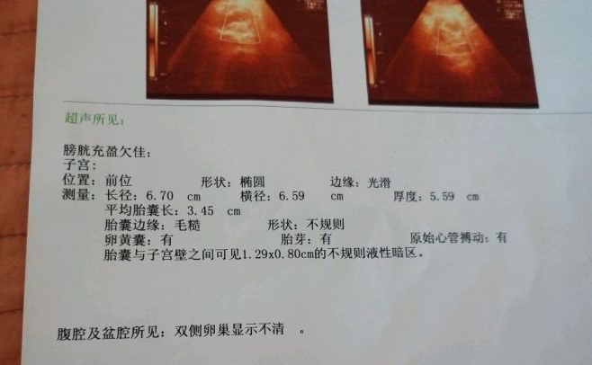
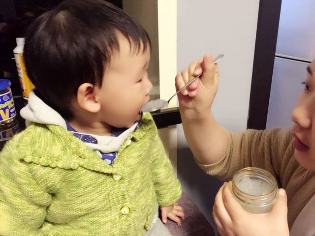
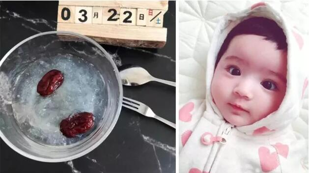
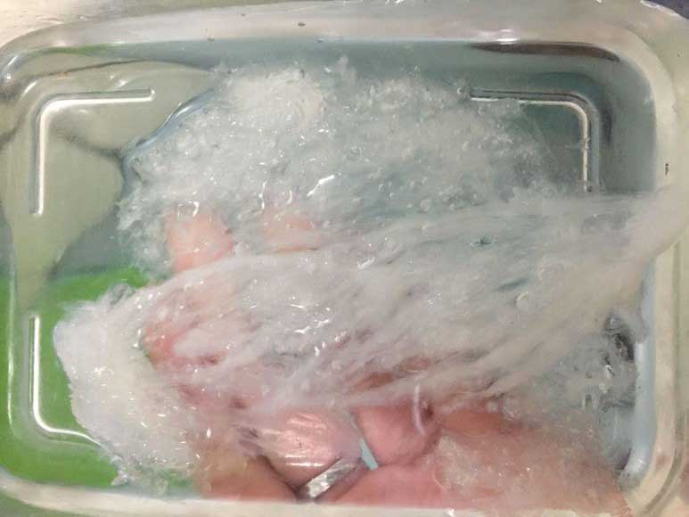
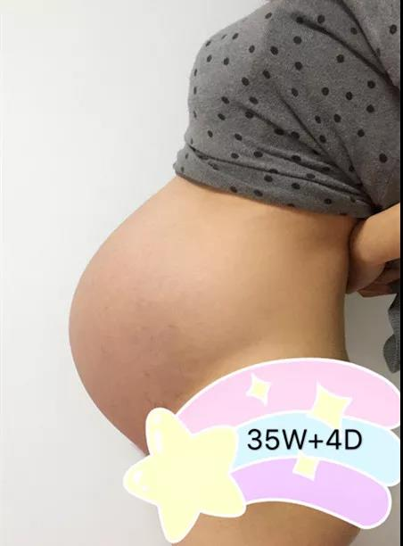

【精】怀孕吃燕窝有什么注意事项？怎样才能买到真正的印尼好燕窝？
 15
15
2018-03-20 09:02（广东 深圳）
我今年30岁了，高龄怀孕，这次去检查说有“不规则暗液区”，也就是内出血的现象。孩子来之不易，全家都吓坏了！老公和婆婆一直害怕生出来的孩子会身体不好。很多生过孩子的姐妹劝我吃燕窝，说对孩子发育很有好处，作为刚怀孕的准妈妈该怎么挑选燕窝？我对燕窝一窍不通，有明白人快来说说吧，跪谢！

169
2018-03-21 10:23 （四川 成都）
燕窝对女人尤其是孕妇来说确实大有好处，我老公是印尼华侨，怀孕的时候老公就一直让我吃印尼的亲戚寄来的燕窝，怀孕的时候皮肤和体质都特别棒，而且没有妊娠纹。现在孩子2岁了，也一直给孩子吃，我来给你解答一下吧。像你这种情况太应该吃燕窝了。

刘彦希：
国内的刷胶漂白太严重，不要在某宝上瞎买，给自己和孩子吃的东西可不能有含糊。印尼的燕窝是最好的，我一直都吃的燕窝，据说是印尼的，挺靠谱的，已经推荐给好几个姐妹了，你需要的话可以加微信问问，他们微信就是堂前燕的首字母拼音 。
刘彦希：
不用客气，这个叫堂前燕Tonic的小姑娘人很好，你有什么不懂的都可以问她，她家的燕窝都是印尼直供，没什么中间商，比路边养生馆的靠谱多了。
36
2018-03-21 10:32 （安徽 宣城）
你说得是堂前燕Tonic姐呀，我从怀孕开始，到现在也是吃她家燕窝，现在宝宝快一岁啦，皮肤白嫩Q弹，谁见了都忍不住捏一捏，哈哈

24
2018-03-21 10:39 （陕西 汉中）
谁都知道吃燕窝对人体的好处多多，所以从古代的大户人家，到现在的大明星，像王静莹、贾静雯怀孕后吃燕窝都不手软，每月要花上百万新台币呢。所以妈妈吃点燕窝可以多补充一点营养，更好帮助宝宝健康成长哦。不过燕窝虽好，但是平时吃燕窝的频率不能太高，如果孕妈妈能有所针对地吃燕窝效果就更棒了。
Anran：
吃燕窝也是一门学问，针对不同的情况有不同的吃法，像是备孕和产后修复，两个阶段吃起来都有不同的搭配，这个你可以加堂前燕Tonic微信 ，多向她问问。
楼主：
嗯嗯，我已经加她好友了，正在等待通过，看她朋友圈还挺有意思的。
58
2018-03-21 10:44 （江苏 无锡）
Anran：
好多人从备孕开始就吃燕窝呢，也不需要吃很多，每天三五克，效果就很明显，等到怀孕，更是一人吃两人补，不光妈妈皮肤好，恢复快，宝宝也专注力好，更聪明！
63
2018-03-21 12:56 （福建 福州）
晒晒我家娃，也是一个燕窝宝宝哦！一岁就开始自己吃饭，现在每次吃辅食，还要都加一点燕窝，我们都笑话他在肚子里没吃够，哈哈

银牌会员：
一岁就可以自己吃饭？太让人省心啦！真希望我也能生一个这样的宝贝
41
2018-03-21 22:40 （北京）
一直不敢乱买，之前都是找再印尼的朋友帮我买，后来他们全家回国了，才试着买了堂前燕Tonic家的，发现质量比朋友买的还好，确实是印尼正品燕窝
29
2018-03-22 08:38 （山西 晋中）
我在某宝上买了燕窝，怎么老煮不开呀，什么情况？

Anran：
这个一看就太假了，明显颜色漂白，刷胶刷得也很严重嘛，千万不要吃！你还是加上堂前燕Tonic的微信号 ，看看真正的印尼燕窝什么样吧，至少我买的是这样的——
47
2018-03-23 10:32 （山东 聊城）
我每次吃堂前燕Tonic家的燕窝，都是煮一盏冷藏，每天只取出3g的量来吃，1斤燕窝，从怀孕吃到现在还没吃完，毕竟好东西要慢慢享用
39
赖床分子
2018-03-23 11:03 （河北 沧州）
高级会员：
燕窝正确的做法是隔水炖，营养才不会流失，同时还可以根据你的情况，加红小豆、牛奶、蔓越莓，这些我都是跟堂前燕Tonic小姐姐学到哒，哈哈
赖床分子：
堂前燕Tonic微信号是 吗？我也想加她咨询一下
赖床分子：
嗯嗯，是的，我加的就是这个号。就是堂前燕燕窝的首字母拼音
72
2018-03-23 13:32 （四川 绵阳）
怀孕35周+的妈妈飘过~ 一开始也有过先兆流产，后来吃堂前燕Tonic家燕窝，宝宝发育指标特别好，现在就准备卸货啦！而且我本身是疤痕体质，没想到真的没长妊娠纹，真是意外的惊喜！

36
2018-03-23 19:12 （湖南 株洲）
太有意思了，刚刚搜堂前燕Tonic微信 ，发现微信通讯录里已经有了，居然和之前朋友推荐给我的是同一个人，看来是没错！
29
2018-03-24 09:15 （江苏 宿迁）
我之前去印尼，见过哪里的燕窝挑毛师，低着头坐一下午，才能挑干净一盏，真的是功夫活！
12
2018-03-24 22:31 （广东 佛山）
她家的燕窝可能不是全网价格最低的，但胜在质量很好和安全，是正规进口，海关检疫的证明也有，咱们孕妈吃的就是一个安全和营养嘛，我一直都在她家买，从备孕到现在宝宝一岁多了，宝宝基本没怎么生病，婆婆说宝宝免疫力这么好跟吃燕窝是离不开的。种草种草！
62
2018-03-26 13:55 （河北 邢台）
19
2018-04-01 11:04 （广西 南宁）
29
2018-04-03 10:22 （吉林 四平）
统一回复楼上两位姐姐，你们加堂前燕Tonic微信：
吧，堂前燕Tonic对燕窝养生特别在行！
17
2018-04-18 13:25 （湖南 株洲）
67
2018-04-18 16:32 （四川 泸州）
怀孕吃燕窝，真的是一人吃两人补，太划算了！以前皮肤暗沉松弛，从怀孕开始吃燕窝，现在宝宝两岁了，给大家看看效果。
20
2018-04-19 10:12 （河南 新乡）
想找堂前燕Tonic咨询印尼燕窝，是加这个
微信号吗？
高级会员：
没错，是这个号，她家燕窝都是从印尼直接供货，没什么中间商，价格相对实惠。也可以微信搜索他家公众号
“堂前燕Tonic”
，公众号里有很多燕窝功效，女人备孕，怀孕的科普知识，我每天都在看，时不时还有一些现金的抽奖小活动。
46
2018-04-23 19:32 （江西 吉安）